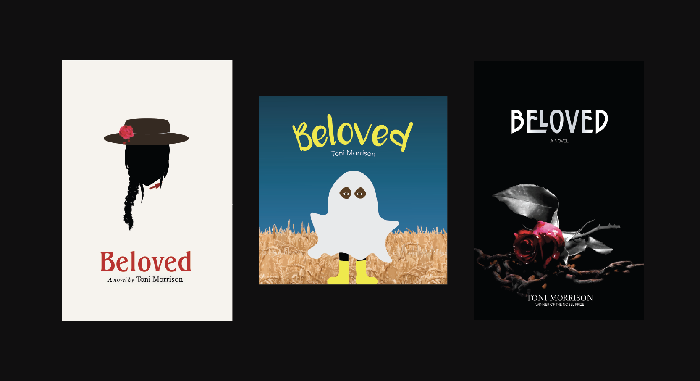
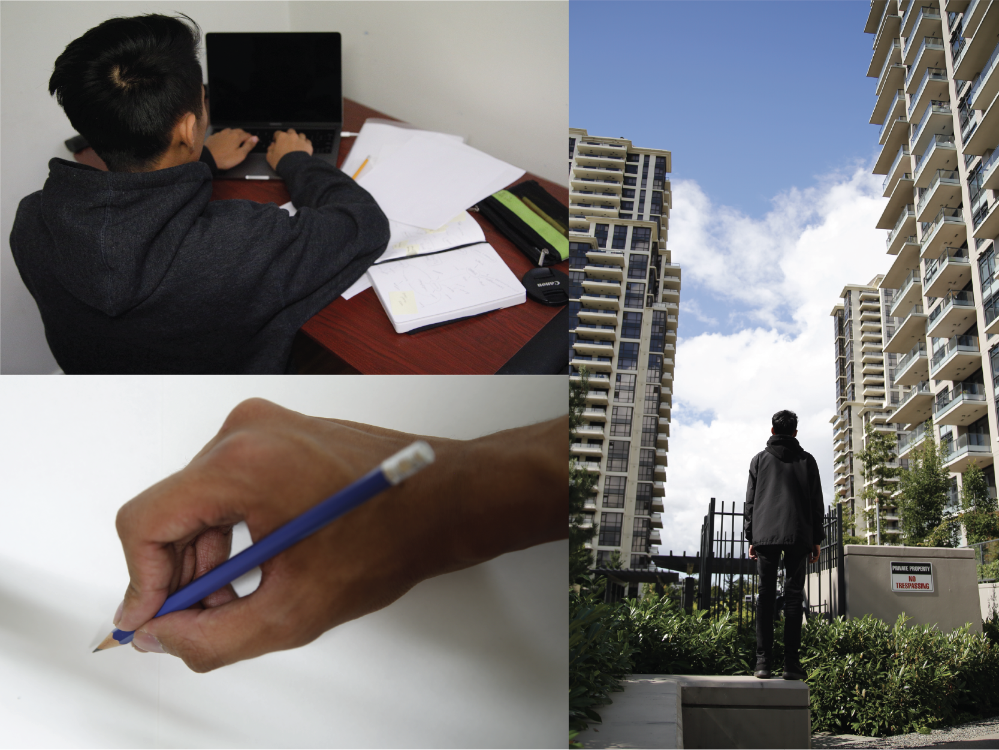
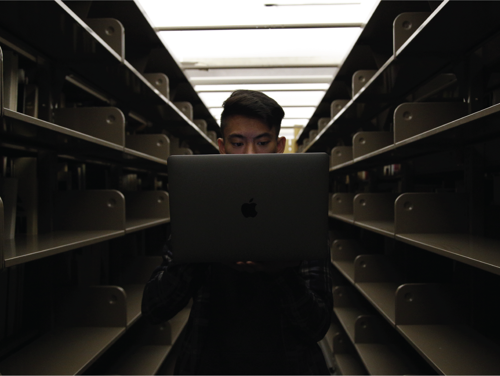
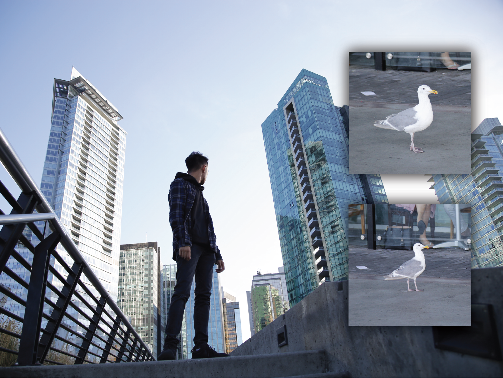

beloved
A novel written by Toni Morrison
3-in-1 book cover project / Graphic Design in Transition: Print and Digital Books

3-in-1 book covers
Beloved: 3-in-1 Book Covers
project description
Redesign the cover of an existing book for three different audiences and three distinct genres. The goal of this project is to explore different design decisions associated with book genres and audiences by developing concepts and typographic format for each of the book cover. Deliverable should also include a one-page rationale including original research.
Design Rationale
My main approach for the first cover was to target adults, mostly
African-Americans and older audiences who are interested in historical
literature. I graphically designed this cover to be simple, clean, and
aesthetically pleasing so readers can be proud and not afraid to show
off the book when reading it in public. The silhouette of the
African-American woman on the cover gives the audience a peak into
the novel, the hat helps set a sense of time/place while the rose
and blood gives a hint into the meaning behind “Beloved”. The serif
typeface chosen for the title was Benguiat Pro ITC to give the book
a high-end stylistic feel while maintaining the historical element
to the overall design. The title typeface was paired with a more
traditional serif to give balance to the overall composition of
the book.
My targeted audience for the second cover was graphically designed
for children under six years old. Keeping the main themes of the book,
I decided to design a ghost story. I drew an African-American kid
wearing a ghost costume standing in a hay field to represent a form
of farm life and give an element of slavery. My goal was to keep the
book more light and playful. I was able to achieve this by using a
spooky yet playful typeface combined with happy colour elements.
The colours red, pink, blue and yellow used in the three covers were
all selected because of its significants in the novel. Red was a
symbol of pain, evil and death, representing blood from the death of
the child. Pink is the last colour the mother remembers seeing on her
baby’s headstone, the colour was incorporated into the rose of the
first cover. Finally,blue and yellow were used to signify peace in
the novel.
My targeted audience for the final cover were teenagers and/or
high school readers. I based this design on the genre of magical
realism. My approach to this cover was inspired by the book series,
Twilight. I wanted it to be more imaged based, dark and stylish to
better fit into the theme of teenage novels. I chose an image of a
rose with chains to represent the significants of the female
characters and themes of slavery and freedom. The typeface I chose
for the title was Carilliantine Solid, since it gives character to
story but also a stylistic approach you often see a lot in similar
book genres. I used a serif typeface for the authors name to help
with type hierarchy and paired the two fonts with Avenir Next to keep
everything balance and legible.
Process
brainstorming


I started out by creating two mind maps to draught down ideas
for my photos. The first mind map is for my private self and the second
map is for my public self. Then I took these ideas and went out with a
friend to take some experimenting shots. After taking the experimenting
shots, I went home and looked over them. I tried to create a concept
using the photos I had and explored the ideas that I had in mind.
For the first photo I wanted to keep the idea of me being behind
the computer screen to show my true private self and for the second
photo I decided I to be in an urban area and add a photo of my
hand holding a pencil to make it look like I’m drawing a picture
of myself which would represents how my public social media self
is a person I’ve created not my true self.
photo selection


After retaking all my photos I narrowed it down to the final
photos that would best represent my idea. From there, I started to
individually edit the photos starting with the "private self" photo.
For the first photo, I went into image adjustment and used the
hue/saturation settings to lower the saturation down by -50. Next,
I used the quick selection tool to select the background of
the photo to adjust the brightness and contrast. From there, I select
the light on the ceiling and darken it with the lightness adjustment
in hue/saturation settings.
For the second photo, after opening the original photo in photoshop,
I imported the picture of the seagull and used the quick selection
tool to crop the bird. Then using the quick selection tool again
I selected only the wings/body of the bird. I copied and pasted
the wings to make a total of 4. Using the transformation tool
I began to enlarge and shape the wings to my liking and then
repeated the process for the rest of the wings. After placing
the group of wings behind my back, I used the quick selection
tool once again to select my whole body and the wings. Then I
copied and paste it onto a new layer that I’ve created, from
there I was able to use the cloning tool to photoshop out the
buildings behind me from the original photo. Finally I selected
the background layer and used the hue/saturation tool in image
adjustment to increase the saturation and turn up the lightness.
conclusion
The outcome of this digital image design project was excellent, the photos come out as I planned in both the print and digital version. Even though the outcome of this was great, I believe the photos can still be further refined to produce an even better result especially the wings in the second photo.